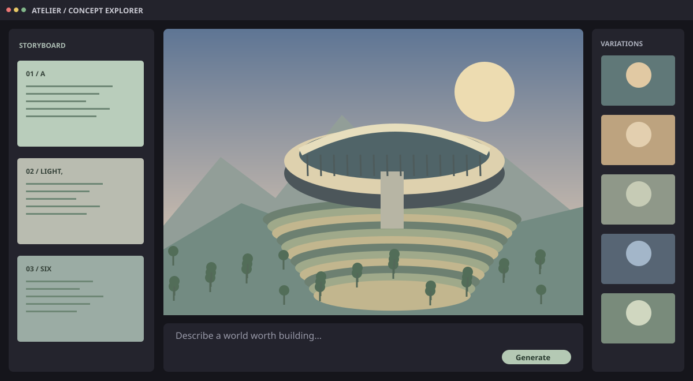

All six illustrations are original vector artwork generated for this study.
The AI gallery explores three original concept-art, model, and code workflows. The workspace gallery contains three original architectural illustrations. Enable JavaScript for interactive crossfades.
